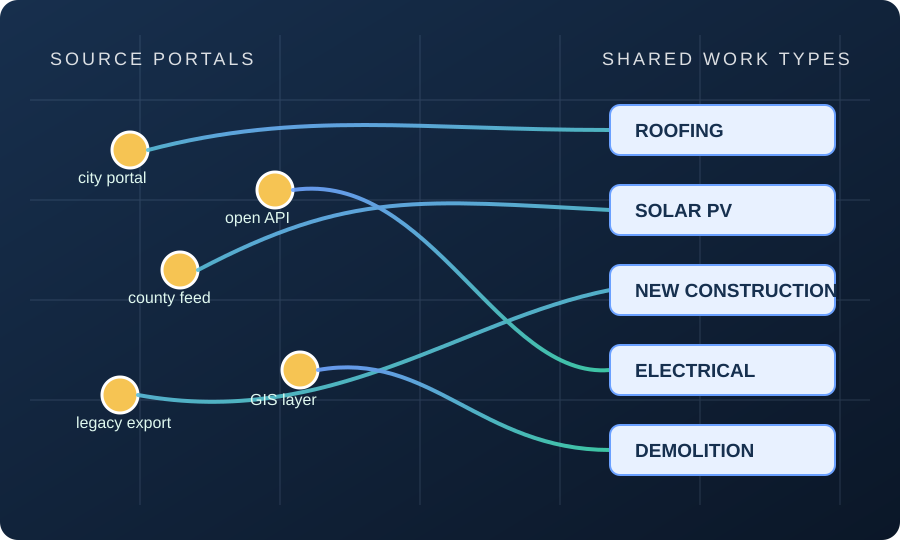

Current collection
150M+
source records retained
85
accepted contributions
25
work-type heads
0.1°
planned grid product
Counts describe collected source records. PermitKey does not claim they are deduplicated unique permits or projects.
Open data for the built environment
PermitKey harmonizes public permit records across cities, years, and portal systems, then organizes them into work types that can be compared and reused.

Why PermitKey
A roofing permit, a service upgrade, or a new dwelling may appear under entirely different labels from one jurisdiction to the next. PermitKey brings those records into a shared work-type vocabulary while keeping the source and uncertainty visible.
The result is designed for research on construction, housing, energy, climate policy, and urban change. Researchers can study where work happens, how it changes over time, and how local policies shape the built environment.
Current collection
Counts describe collected source records. PermitKey does not claim they are deduplicated unique permits or projects.
How it works
Public records are collected with their source registry, portal URL, native labels, dates, coordinates, and source-row provenance.
Native permit descriptions and categories are mapped into a documented taxonomy with explicit missingness and multilabel semantics.
Reviewed releases will provide jurisdiction × year × work type tables and a companion 0.1° grid where property locations are reliable.
Data and documentation
The first public package will contain aggregate tables, a data dictionary, taxonomy definitions, provenance, and validation notes. It will not expose raw permit-level records.
Current status
The copied collection and model pipeline have passed integrity smokes. Geography mapping, source-rights review, disclosure controls, and candidate validation are still being completed before a public data download is enabled.
The team
Led collection, harmonization, model development, and the reproducible release pipeline.
Designed taxonomy experiments, stakeholder input, and economic and policy analysis.
Supported scalable labeling experiments and economic and sustainability analysis.
Directed the project, coordinated collaborators, and provided mentorship and strategic guidance.